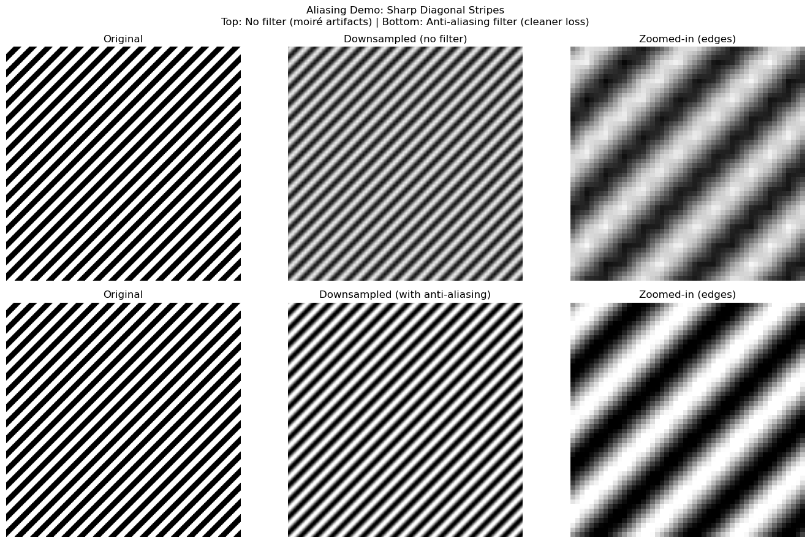

import numpy as npimport matplotlib.pyplot as pltfrom PIL import Image# Load the real imageimg_pil = Image.open('./images/cats-dog.jpg')img = np.array(img_pil)print(f"Shape: {img.shape}")print(f"Data type: {img.dtype}")print(f"Value range: [{img.min()}, {img.max()}]")# Displayfig, ax = plt.subplots(figsize=(8, 6))ax.imshow(img)ax.set_title(f"Our Demo Image ({img.shape[0]}×{img.shape[1]}×{img.shape[2]})")ax.axis('off')plt.tight_layout()plt.show()
Shape: (1299, 2309, 3)
Data type: uint8
Value range: [0, 255]
What Does a Pixel Mean?
A pixel is a measurement, not “truth”
The pixel value comes from a sensor (e.g., a camera or scanner). It can be noisy, distorted, or affected by lighting, not a perfect record of reality.
RGB channels = 3 sensor measurements per location
“Red” is relative to context and white balance
Code
# Pick a few coordinates and print pixel valuescoords = [(100, 100), (200, 300), (400, 150)]print("Sample pixel values (RGB):")for y, x in coords: r, g, b = img[y, x]print(f" Position (row={y}, col={x}): R={r}, G={g}, B={b}")
Sample pixel values (RGB):
Position (row=100, col=100): R=188, G=187, B=182
Position (row=200, col=300): R=192, G=191, B=186
Position (row=400, col=150): R=185, G=184, B=180
# Play the audio inline (works in Jupyter and rendered HTML)import IPython.display as ipdprint("Audio player:")ipd.Audio(audio_np[0, start_sample:end_sample], rate=sr)
Audio player:
File Types & Conversions
File formats are interfaces between tools — and they’re full of sharp edges.
Main points:
Lossy vs lossless compression
Container vs codec (especially for audio/video)
Bit depth and color space
Metadata can change behavior
Images: JPEG vs PNG vs WebP (and the hidden gotchas)
Common formats:
JPEG: lossy compression (good for photos)
Artifacts accumulate with repeated saves
Block artifacts visible at low quality
PNG: lossless; supports alpha channel
Larger files for photos
Great for graphics, text, screenshots
WebP: modern format (lossy or lossless)
Better compression than JPEG/PNG
Not universally supported (yet)
Hidden gotchas:
Bit depth: 8-bit (0–255) is common, but 16-bit exists (HDR, medical imaging)
Color space: usually sRGB; “looks different” bugs often come from color management
EXIF metadata: orientation, camera settings, timestamps
Key point: Conversions can change pixel values, not just file size.
downsampled_img = imgs_downsampled[-1]downsampled_img.shape# Upsample the downsampled image to 256x144 using bilinear interpolationupsampled_img = Image.fromarray(downsampled_img).resize((256, 144), Image.BILINEAR)fig, ax = plt.subplots(figsize=(10, 5))ax.imshow(upsampled_img)ax.set_title("Upsampled Image")ax.axis('off')plt.show()
Aliasing (Images)
Aliasing:
High-frequency content masquerades as low-frequency
Appears as moiré patterns, jagged edges, or “stair-stepping”
Anti-aliasing:
Filtering before downsampling helps
But still loses information
Common in:
Thin lines / text
Repeating patterns
Fine textures
Code
# Show crops: original, downsampled (no filter), downsampled (with filter)crop_y, crop_x =600, 200crop_size =300fig, axes = plt.subplots(1, 3, figsize=(15, 5))# Original cropcrop_orig = img[crop_y:crop_y+crop_size, crop_x:crop_x+crop_size]axes[0].imshow(crop_orig)axes[0].set_title("Original\nResolution")axes[0].axis('off')# Downsampled then upsampled (bilinear, no anti-aliasing)img_down = img_pil.resize((128, int(128* img.shape[0] / img.shape[1])), Image.BILINEAR)img_up = img_down.resize((img.shape[1], img.shape[0]), Image.BILINEAR)img_up_arr = np.array(img_up)crop_down = img_up_arr[crop_y:crop_y+crop_size, crop_x:crop_x+crop_size]axes[1].imshow(crop_down)axes[1].set_title("Downsample→Upsample\n(No Anti-Aliasing)")axes[1].axis('off')# Downsampled with LANCZOS filter (anti-aliasing) then upsampledimg_down_filtered = img_pil.resize((128, int(128* img.shape[0] / img.shape[1])), Image.LANCZOS)img_up_filtered = img_down_filtered.resize((img.shape[1], img.shape[0]), Image.LANCZOS)img_up_filtered_arr = np.array(img_up_filtered)crop_down_filtered = img_up_filtered_arr[crop_y:crop_y+crop_size, crop_x:crop_x+crop_size]axes[2].imshow(crop_down_filtered)axes[2].set_title("Down/Up w/ Filter\n(Anti-Aliasing)")axes[2].axis('off')plt.tight_layout()plt.show()print("Key insight: Anti-aliasing filter REDUCES artifacts but CANNOT recover lost detail")
Key insight: Anti-aliasing filter REDUCES artifacts but CANNOT recover lost detail
Code
# Create synthetic image with sharp patterns to show aliasing more clearly# Generate diagonal stripes patternsize =1000stripe_img = np.zeros((size, size, 3), dtype=np.uint8)for i inrange(size):for j inrange(size):if (i + j) %20<10: # Diagonal stripes stripe_img[i, j] = [255, 255, 255] # Whiteelse: stripe_img[i, j] = [0, 0, 0] # Blackstripe_pil = Image.fromarray(stripe_img)# Extract a crop region for comparisoncrop_y, crop_x =300, 300crop_size =300downsampled_size =256fig, axes = plt.subplots(2, 3, figsize=(14, 9))# ===== ROW 1: WITHOUT anti-aliasing filter =====# Original cropcrop_orig = stripe_img[crop_y:crop_y+crop_size, crop_x:crop_x+crop_size]axes[0, 0].imshow(crop_orig)axes[0, 0].set_title("Original")axes[0, 0].axis('off')# Downsample WITHOUT filtering (BILINEAR)stripe_down = stripe_pil.resize((downsampled_size, downsampled_size), Image.BILINEAR)stripe_up = stripe_down.resize((size, size), Image.BILINEAR)stripe_up_arr = np.array(stripe_up)crop_down = stripe_up_arr[crop_y:crop_y+crop_size, crop_x:crop_x+crop_size]axes[0, 1].imshow(crop_down)axes[0, 1].set_title("Downsampled (no filter)")axes[0, 1].axis('off')# Zoom in on the downsampled crop to show edges (no difference map)zoom_crop =50# size of zoomed-in regionzoom_y, zoom_x =50, 50# relative to crop regionzoom_region = crop_down[zoom_y:zoom_y+zoom_crop, zoom_x:zoom_x+zoom_crop]axes[0, 2].imshow(zoom_region)axes[0, 2].set_title("Zoomed-in (edges)")axes[0, 2].axis('off')# ===== ROW 2: WITH anti-aliasing filter =====# Original crop (same)axes[1, 0].imshow(crop_orig)axes[1, 0].set_title("Original")axes[1, 0].axis('off')# Downsample WITH filtering (LANCZOS)stripe_down_filtered = stripe_pil.resize((downsampled_size, downsampled_size), Image.LANCZOS)stripe_up_filtered = stripe_down_filtered.resize((size, size), Image.LANCZOS)stripe_up_filtered_arr = np.array(stripe_up_filtered)crop_down_filtered = stripe_up_filtered_arr[crop_y:crop_y+crop_size, crop_x:crop_x+crop_size]axes[1, 1].imshow(crop_down_filtered)axes[1, 1].set_title("Downsampled (with anti-aliasing)")axes[1, 1].axis('off')# Zoom in on the filtered crop to show edges (no difference map)zoom_region = crop_down_filtered[100:100+zoom_crop, 100:100+zoom_crop]axes[1, 2].imshow(zoom_region)axes[1, 2].set_title("Zoomed-in (edges)")axes[1, 2].axis('off')plt.suptitle("Aliasing Demo: Sharp Diagonal Stripes\nTop: No filter (moiré artifacts) | Bottom: Anti-aliasing filter (cleaner loss)")plt.tight_layout()plt.show()print("Notice: Top row shows harsh moiré patterns; bottom row is blurry but smoother")

Notice: Top row shows harsh moiré patterns; bottom row is blurry but smoother
Code
# Create a diagonal line to show jagged edges vs anti-aliasingsize =400line_img = np.ones((size, size, 3), dtype=np.uint8) *255# White background# Draw a thick diagonal line from top-left to bottom-rightthickness =30for i inrange(size): y = i x = i# Draw thick line by filling a rectangle around the diagonal y_start =max(0, y - thickness //2) y_end =min(size, y + thickness //2) x_start =max(0, x - thickness //2) x_end =min(size, x + thickness //2) line_img[y_start:y_end, x_start:x_end] = [0, 0, 0] # Blackline_pil = Image.fromarray(line_img)# Downsample aggressively to make artifacts visibletarget_size =80# Without anti-aliasing (NEAREST - preserves jagged edges)line_down_no_aa = line_pil.resize((target_size, target_size), Image.NEAREST)# With anti-aliasing (LANCZOS - smooths edges)line_down_with_aa = line_pil.resize((target_size, target_size), Image.LANCZOS)# Plot comparisonfig, axes = plt.subplots(1, 3, figsize=(15, 5))axes[0].imshow(line_img)axes[0].set_title("Original (400x400)\nDiagonal line")axes[0].axis('off')axes[1].imshow(line_down_no_aa)axes[1].set_title(f"Downsampled to {target_size}x{target_size}\n(No anti-aliasing - NEAREST)")axes[1].axis('off')axes[2].imshow(line_down_with_aa)axes[2].set_title(f"Downsampled to {target_size}x{target_size}\n(With anti-aliasing - LANCZOS)")axes[2].axis('off')plt.suptitle("Anti-Aliasing Smooths Jagged Edges", fontsize=14, fontweight='bold')plt.tight_layout()plt.show()print("Key insight: Anti-aliasing adds intermediate gray pixels to smooth diagonal edges")